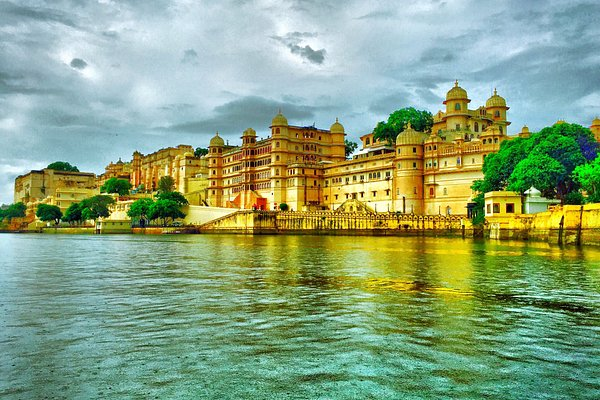
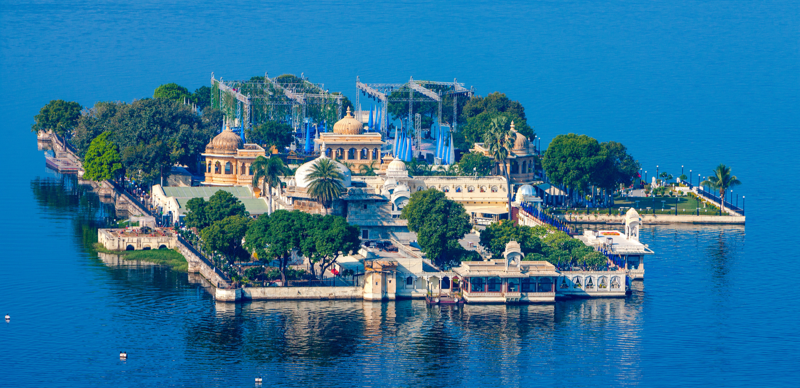

Udaipur, also known as the City of Lakes, is one of the most visited tourist places in Rajasthan. Located around stunning water lakes and enveloped by the Aravalli Hills in all directions, Udaipur is known for its azure lakes, magnificent palaces, vibrant culture and delectable food. Along with being a must-visit destination, it is also one of the best places to experience luxury in India.
Boating through the shimmering Lake Pichola is one of the most beautiful sights and highlights of every Udaipur trip. Also known as the "Venice of the East", Udaipur is inarguably one of the most romantic cities in India. Visit its larger than life havelis and monuments, stroll through the bustling street markets, ride through one of the seven lakes of the city or relax in one of the extraordinary hotels, and you will discover the charm of Udaipur.
Lake Pichola, Jaisamand Lake, City Palace, Monsoon Palace, Jagmandir, Fateh Sagar Lake, Jagdish Temple and Saheliyon ki Baari are some of the popular tourist places in Udaipur. The city was founded in 1559 by Maharana Udai Singh II as the new capital of the Mewar kingdom. The grandeur of the Rajput era is still prevalent in the city's architecture. A trip to Udaipur is often combined with a visit to nearby Kumbhalgarh (80km) and Mount Abu. The revered Nathdwara temple is about 60 km from Udaipur.